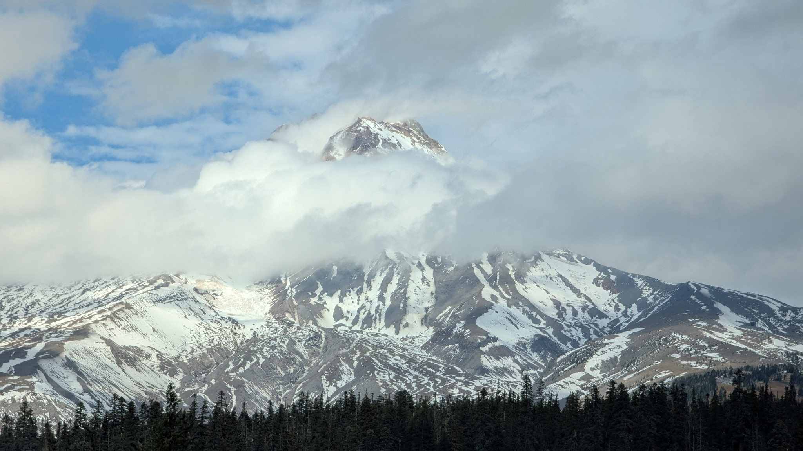

2025.10.28 :: di.nota
2025.10.27 :: yard
Pollinator friend. Looks like it's sharpening its stinger, then moves around while saying "let me at him!" and then, when it realizes it can't get through the glass, it looks like it's memorizing my face for a future ass kicking.
2025.10.26 :: library
Librarian trying to pick the right book for reader's advisory.
2025.10.25 :: ope
I want to go back to Paris just so I can eat at the McDonald's on Avenue des Champs-Élysées again.
2025.10.24 :: library
Library staff retirement.
2025.10.22 :: samuel.pepys
Sisters and back yesterday (with Mabel). Crossed four mountain ranges. Today? The Gorge, Mt. Hood, and Timberline (with Stacy).
Leafs are just popping colors this year. Wonder if it's because of all the sun and little rain? Whatever the reason - beautiful! And Mt. Hood had its first snow of the sseason, with another foot forecast for this weekend.

2025.10.21 :: h
Tootsie Roll shrinkflation. Buncha monsters. Is nothing sacred?
2025.10.20 :: samuel.pepys
'Tragic' surf rescue near Siletz Bay. Someone got caught in a rip.
Decided to add the occasional vids and pics I've taken to the header of new pages.
Decided to bring back the CSS that allows for auto switching between light/dark mode for the site based on visitor settings.
2025.10.19 :: samuel.pepys
We had the first sneaker wave warning of the season over the weekend. Seas were rough and beaches were dangerous. We had some big wave surfers out there doing their thing about 100 yards from shore. Never seen them that close before. The waves were so big and the sea was so gnarly that they had a wave runner towing people into the waves and out of the surf.
Stacy and I went for a nice leaf peeping drive yesterday. Sunny all the way to Astoria. Saw some nice Fall foliage. (On the coast itself leaves either stay green and fall off the few deciduous trees around or turn brown then fall off the few deciduous trees around. Not pretty. But go a mile or to inland and the leaves start popping!) Ate at our favorite place in Astoria, Frites and Scoop (though Astoria Brewing Company is a close second) then hit Costco and drove home in the gray, rainy Oregon Coast weather.
Went to a haunted house on Friday with a couple friends. Haven't been to one in a couple decades. It was fun! They did a great job putting it on. Last time I went to a haunted house I was in my early 20s. Stacy had to work and the couple I went with got in a fight and left, so I tagged along with this young mother and her kids. When we finished she asked if I had been scared. I said no. Then she asked why I had been holding onto her jacket so much. Busted!
Short work week coming up. Took a couple days off. Yay me.
2025.10.16 :: library
Comic by Martin Rosner @ Hot Paper Comics.